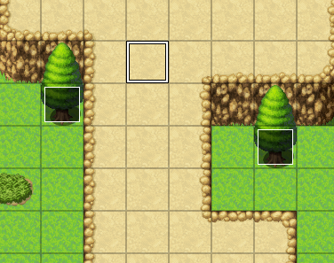
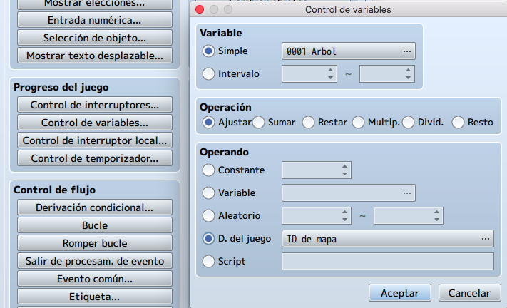
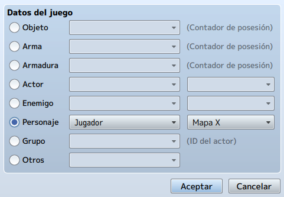
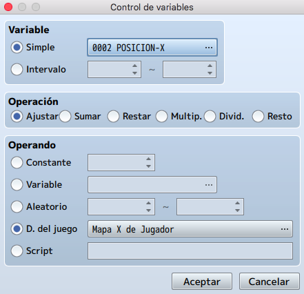
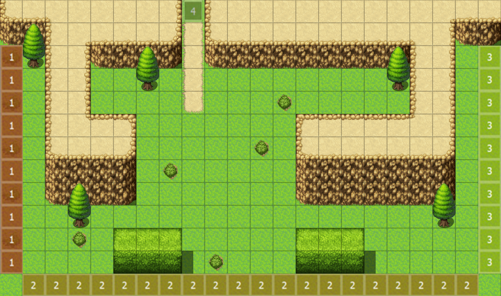
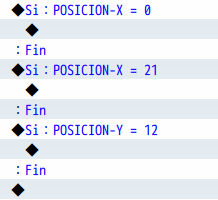
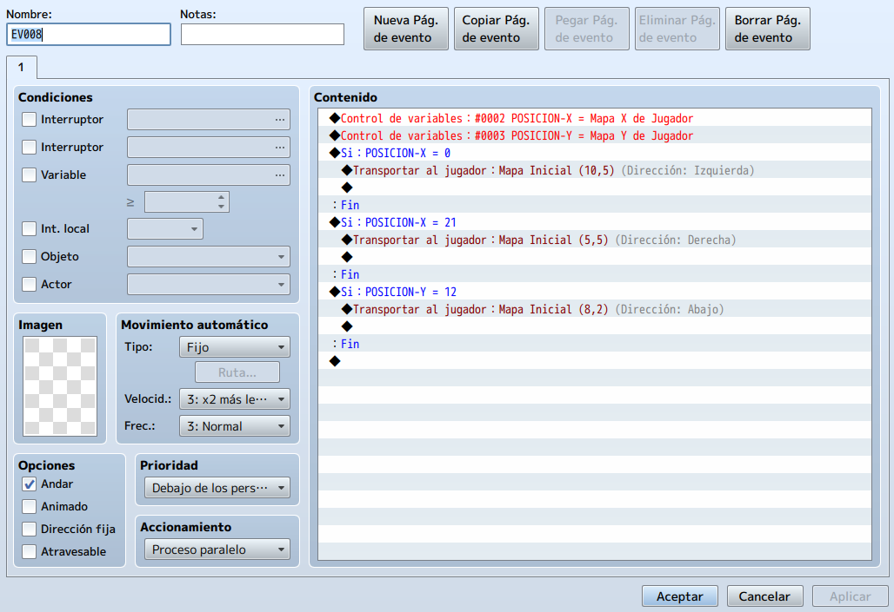

Hasta ahora, nos hemos ocupado de transiciones de área de un cuadrado de ancho. Sin embargo, ¿qué pasa si
hacemos un área expansiva, como un desierto, y queremos hacer salidas para el jugador? Se pueden necesitar
decenas de eventos para cubrir una sola dirección. ¿Por qué gastar de 10 a 40 eventos para transiciones de
área en un solo mapa cuando puedes cubrirlos todos en uno?.
En este tema aprenderemos a utilizar las variables para hacer estas transiciones de área.
Lo primero que haremos será volver a cambiar al modo Evento. Ahora buscaremos un buen lugar en el segundo mapa que el jugador no pueda alcanzar. Por ejemplo, uno de los cuadrados de la cima de la montaña (3,1).

Luego, crearemos un nuevo evento en esa casilla. Estableceremos el Accionamiento del evento como Paralelo.
A continuación, tendremos que comprobar las posiciones X, Y del jugador en todo momento. Es decir, la razón
por la que usamos Proceso paralelo.
El secreto está en el comando Control de variables, específicamente en la categoría de Operando, Datos del
juego.

La categoría de Datos del juego tiene como valor predeterminado el ID de mapa. Hagamos click en el botón
etiquetado como "..." en el extremo más alejado de la barra, para cambiar el tipo de datos que deseamos
asignar a la variable.
Una vez que hagamos click en el botón, notaremos una gran cantidad de cosas posibles que puede conectar a
una variable. Lo que estamos buscando es la posición del jugador en el mapa (también conocido como sus
coordenadas X e Y). Por lo tanto, hacemos clic en la opción Personaje, que por defecto es el Mapa X del
jugador. ¡Exactamente lo que necesitamos!

Seleccionaremos esa opción, y luego nos aseguraremos de que estámos guardando el valor en una nueva variable (llamaremos a la variable POSICION-X), quedando el Control de variables de la siguiente forma.

Ahora crearemos un nuevo comando de Control de variables, pero en este caso en lugar de guardar el Mapa X del
jugados, guardaremos el Mapa Y del jugador y a la variable la llamaremos POSICION-Y.
Bajaremos el tamaño de nuestro mapa a la zona que hemos pintado (22x13) para ver más claros los límites del
juego.
Lo que haremos ahora será determinar los límites de cada lado del mapa en el que queremos tener transiciones
de área. Para Visualizar mejor la idea, los límites quedarían así (de forma figurada).

Tenemos una única transición marcada por el número 4 hacia el norte. Además, tenemos 9 cuadrados a la
izquierda, 14 cuadrados en la parte inferior y 10 cuadrados a la derecha. Serían 33 eventos de transición,
si los hiciéramos uno por uno, por lo que no lo haremos así.
Analicemos esos límites del mapa.
• El cuadrado superior del límite izquierdo es (0,3).
• El cuadrado inferior del límite izquierdo es (0,11).
• El cuadrado más a la izquierda del límite inferior es (1,12).
• El cuadrado más a la derecha del límite inferior es (20,12).
• El cuadrado superior del límite derecho es (21,2)
• El cuadrado inferior del límite derecho es (21,11).
¿Qué significa esto? Bueno, podemos ver algunas tendencias.
• Cuando se traza el límite horizontal, encontraremos que el valor de Y permanece igual (12).
• Cuando se traza un límite vertical, el valor de X permanece igual (0 y 21).
Por lo tanto, nuestras derivaciones condicionales deben leerse de la siguiente manera:

Ahora lo único que nos quedaría sería dentro de cada derivación condicional hacer la transición al mapa correspondiente. Nosotros utilizaremos el primer mapa para hacer la prueba, quedando el evento de la siguiente forma.

Ahora toca volver a probar el juego...